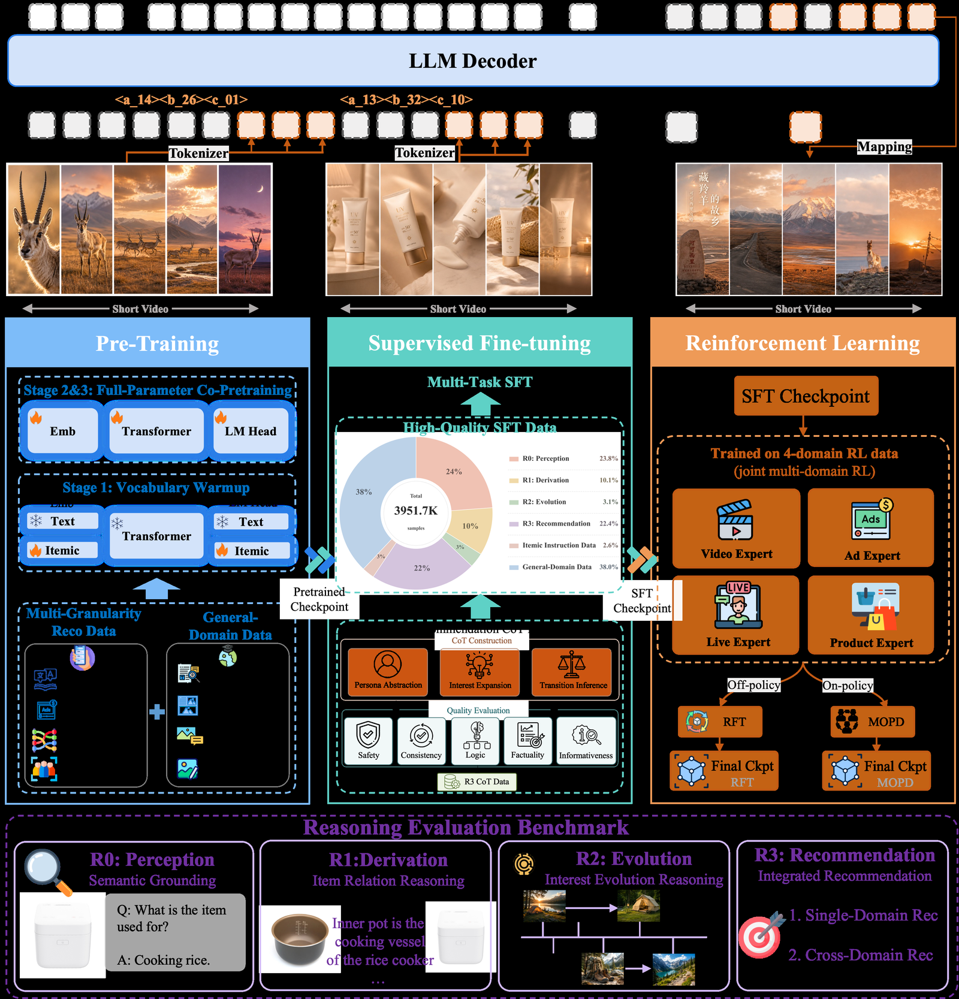
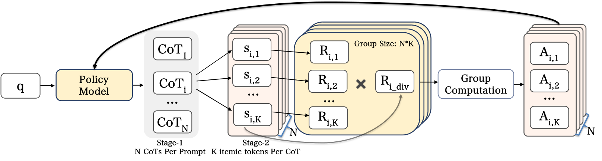
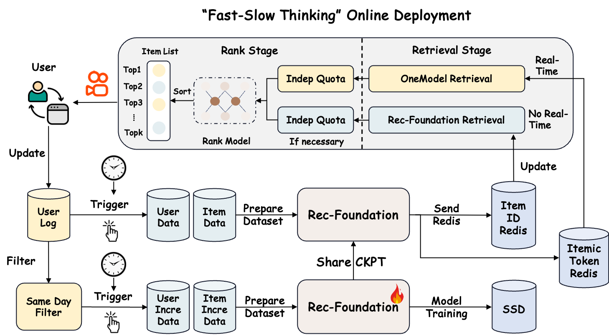

目录 · 10 节
1它到底在解决什么问题？2先看全景3物品 token 和预训练：先让模型认得物品4SFT：给推理定一个固定结构5RL：先按业务域分开训，再合成一个6这套方案真的让“思考”更好了吗？7线上怎么用、效果如何8我认为它的局限9一个推荐团队可以怎么试10结论与评价分享 SHARE
做生成式推荐、在考虑给模型加推理过程的团队值得读，但要分清哪些收益来自“思考”、哪些来自更扎实的预训练。快手在 OneRec-Think、OpenOneRec 上都遇到同一个问题：让模型先写一段推理再输出物品，推荐效果并不比直接输出更好。OneReason（快手的推荐基础模型，从 Qwen3 续训，开源 8B 和 0.8B 两个版本）的核心思想一句话：先用 578B token 的预训练让物品编号和文字含义对齐，再用结构固定的推理过程做 SFT，最后按业务域分别做 RL、再合并成一个模型。最终在直播跨域推荐（给定用户画像和视频、电商、广告、直播多个域的历史行为，预测用户在直播域的下一个物品）上，思考模式的 Pass@64（生成 64 个候选里至少命中一个真实目标的用户比例）是 21.10%，不思考是 21.01%，差距很小；而只换上它的预训练、用最普通的 SFT，Pass@64 就从 0.89% 跳到 19.32%。快手本地生活广告的 10 天 A/B 里，两种接入方式合起来带来收入 +8.234%。
它到底在解决什么问题？
生成式推荐把“下一个看什么”当成生成任务：每个物品用几个离散码表示（本文叫 itemic token，下面称物品 token，作用和 Semantic ID 一样），模型读入用户历史，逐个生成下一个物品的码。快手的 OneRec 系列已经上线，也验证了这条路能 scale。
大模型在数学和代码上“先想再答”很有效，作者想把它搬到推荐上。问题是物品 token 原本只是一串编号，模型学到的是“看了 A 常接着看 B”这种转移规律，没有可以写成文字的推理依据。作者借用多模态大模型的经验：图像和文字没对齐时，推理链写得再长也是空转。所以他们把问题拆成两件事：先让模型认得每个物品 token 代表什么，再教它用固定结构推理用户兴趣。
论文里有一个真实的推理样例，正好说明他们想要的推理长什么样。一位中年女性用户，画像是家庭日用服装购买、关注穿搭和家居。她近期多次买清洁用品、长时间看清洁教程，搜过“青少年加长版的裤子新款男”并下单，也关注过养生直播、买过零食。模型的推理先把这些行为归成 6 个兴趣方向，再比较哪个最可能延续：家居清洁和子女衣着同时有搜索、点击、购买、长播多种证据，是最强的后续方向；零食、养生更像间歇需求。推理写完，才输出下一个物品的 token。下文讲机制时会沿用这位用户。
先看全景

整体分四块：
| 阶段 | 输入 | 做什么 | 产出 |
|---|---|---|---|
| 物品 token 化 | 封面、视频帧、文字、音频 | 多模态编码成一个向量，再用 RQ-KMeans 量化成 3 个码 | 每个物品 = 1 个域标记 + 3 个码 |
| 预训练 | 578B token 的推荐数据和通用数据 | 让物品 token 和文字落在同一个语义空间 | 能把物品 token 说成文字、也能反过来找物品的模型 |
| SFT | 约 395 万条指令样本 | 教固定结构的推荐推理，也保留不写推理的直接回答样本 | 能“先想再推”的模型 |
| RL 和合并 | 四个业务域的推荐数据 | 每个域单独做 GRPO，再合并成一个模型 | 最终的 OneReason |
设计上的关键分工是：预训练负责让模型认识物品，SFT 负责给推理定格式，RL 负责让推理真的帮到命中率。下面拆开讲。
物品 token 和预训练：先让模型认得物品
物品 token 的做法和常见 Semantic ID 类似：用 ViT、Qwen3-VL 和一个音频编码器把物品内容压成一个向量，训练目标是让另一个大模型能根据这个向量写出物品描述；然后用 RQ-KMeans 量化成三层码，每层 8192 个码。一个视频写出来就是 <|video_begin|><a_5028><b_6733><c_2559> 这样 4 个 token。和 OpenOneRec 不同，他们去掉了结尾标记，每个物品少占一个 token。用户历史里几百个物品，每个省一个，省下的上下文留给推理过程。
为什么要专门对齐？新加进词表的物品 token 一开始和文字没有任何联系，模型读到 <a_5028> 不知道它是什么。作者把预训练数据分成四种粒度：单个码的含义、单个物品的多角度描述、物品之间的关系（例如看完一个视频后搜了什么商品）、按时间排列的用户行为。训练分三段：第一段 110B token，只训练新 token 的 embedding 和输出层，让新 token 先在语义空间里找到位置，不打乱原模型；第二段 449B token 全参数训练；第三段 19B token 把单条样本长度从 4K 放到 32K，让模型能读完整的长历史。
作者在 0.8B 模型、固定 30B token 的预算下逐层加数据做消融。基线里的用户数据是 OpenOneRec 原有的行为序列和画像；OneReason 的版本先用开源大模型把画像改写成通顺的文字，再做两种格式：按域分组、用多轮问答问“看过这些视频的人接下来会买什么”，以及严格按时间把各域行为交错排开、随机把一部分物品码换成文字描述。换上这版用户数据后，跨域直播推荐的 Pass@64 从 3.25% 升到 8.56%。这说明推荐能力主要靠最后这一层用户行为数据，前几层负责让模型先认得物品。
SFT：给推理定一个固定结构
预训练后的模型认得物品，但不会推理。SFT 数据按四层能力组织：R0 感知（把物品 token 说成文字，约 94 万条），R1 推导（从一个物品推到相关物品，并写出理由，约 40 万条），R2 演化（从用户时间线里找出一条兴趣演变链，约 13 万条），R3 推荐（完整的推荐推理）。
R3 的推理由大模型教师按三步写成，对应前面那位用户：
- 用户画像抽象：把长历史压成几条带证据的画像，例如“家庭实用消费型”。
- 兴趣发散：列出几个有行为证据支撑的兴趣方向，要细到证据能支持的粒度，例如是“某款手游”而不是“游戏”。
- 转移判断：比较这几个方向哪个最可能延续，给出理由，再输出目标物品。
为什么要规定结构，而不是让教师自由发挥？因为推荐的答案不唯一，自由写的推理很容易变成对目标物品的事后描述。作者明确禁止目标物品出现在推理里，推理必须像不知道答案一样从历史出发。兴趣发散的宽度也有讲究：只列 1、3 或 5 个方向，在四个域上都比列 10 或 20 个好。方向太多时，推理里塞满弱分支，最强的那条信号反而被冲淡。
R3 里也保留了不写推理、直接输出物品的样本，所以同一个模型既能思考也能直接回答，后面才能比较两种模式。
RL：先按业务域分开训，再合成一个
SFT 之后，思考模式仍然不如直接回答。作者说，四个域混在一起做 RL 时思考依然吃亏，只在单个域上做 RL 时思考才占优，因为不同域的用户意图和奖励分布差别很大，混在一起互相干扰。于是他们先在视频、广告、直播、电商上各训一个专家，再合并。不过下面表里单域 RL 那一列，电商和直播仍是不思考略好，这个说法只在部分域成立。
每个域的 RL 用 GRPO：对同一个用户采样一组回答，每条包括推理过程和生成的物品 token，命中真实物品记 1 分，否则 0 分，然后在组内做标准化，得到每条的相对优势：
是第 条回答的奖励， 是防止除零的小常数。直觉是：同一个用户的几条回答里，比平均好的被加强，比平均差的被削弱。

推荐的难点是命中率极低，要采很多条才有几条得分，而每条都带一段长推理，成本很高。作者的办法是两阶段采样：每条推理只写一次，后面接 K 个只有 4 个 token 的物品序列。举个示意：N=4、K=8，得到 32 条回答，但只生成了 4 段推理。如果 32 条里只有 1 条命中，命中的那条优势很大，其余 31 条各得到一个很小的负优势。
为什么还需要多样性奖励？用户兴趣是多面的，好的推理应该引出不同类型的物品。作者看同一条推理下 K 个物品的第一层码有几种不同取值，记为 ，多样性因子是 。示意：K=8，第一层码有 5 种，因子就是 4/7≈0.57；8 个全一样，因子是 0，这条推理下即使命中也拿不到分。还有两个稳定训练的技巧：推理 token 和物品 token 用不同的裁剪范围，推理放宽、物品收紧，避免物品分布变化过猛；算完组内优势后，没命中的回答在整条回答的 actor loss 上乘一个小于 1 的权重 β（优势本身不变），因为它们奖励为 0、优势为负，数量又多，不降权会主导梯度、把模型推向保守。消融显示，去掉这两个技巧后召回下降，去掉降权后更容易训崩、生成无效的物品 token。
四个专家怎么合成一个？作者试了两种。RFT（拒绝采样微调）让每个专家生成推理，只留下命中且推理合格的样本，合在一起再做一轮 SFT。MOPD（多教师在线蒸馏）让学生模型自己生成回答，再按所属的域，让对应专家给每个 token 打分，学生向专家的分布靠拢。
这套方案真的让“思考”更好了吗？
先看 RL 各阶段在 Recall@64 上的变化。评测时每个用户的真实目标是接下来互动的多个物品，Pass@64 只要命中其中一个就算对，Recall@64 则看这些目标里有多少比例出现在 64 个候选中，所以 Recall 更严、数值更低（%，跨域推荐，数字取自论文表 9）：
| 域 | 模式 | SFT | 混合 RL | 单域 RL | RFT | MOPD |
|---|---|---|---|---|---|---|
| 电商 | 思考 | 1.65 | 3.79 | 3.87 | 4.19 | 4.11 |
| 电商 | 不思考 | 2.96 | 3.83 | 4.25 | 3.96 | 4.34 |
| 广告 | 思考 | 3.41 | 5.86 | 7.39 | 7.50 | 7.19 |
| 广告 | 不思考 | 6.49 | 6.68 | 7.33 | 7.26 | 7.13 |
| 直播 | 思考 | 14.32 | 16.03 | 18.62 | 18.35 | 18.89 |
| 直播 | 不思考 | 15.52 | 16.09 | 18.80 | 18.17 | 18.66 |
这张表说明三件事。SFT 之后思考模式明显更差，广告上 3.41 对 6.49，所以单靠对齐和结构化推理没有解决问题。RL 把两种模式都拉高了，思考模式拉高更多。只有 RFT 在这几个域上都让思考略胜，差距约 0.2 个百分点；MOPD 在电商上反而是不思考更好（4.34 对 4.11）。作者的解释是 RFT 只保留命中的推理，推理和答案一致；MOPD 在学生自己的全部回答上学，连直接回答的能力也一起抬高了。
再看和基线的对比（Pass@64，%，论文表 14）：
| 模型 | 跨域视频 | 跨域电商 | 跨域广告 | 跨域直播 |
|---|---|---|---|---|
| HSTU | 0.10 | 0.32 | 2.79 | 2.32 |
| GPT-5.4（生成描述再检索） | 0.24 | 1.43 | 1.64 | 7.20 |
| LC-Rec，Qwen3-8B 直接 SFT | 0.22 | 0.06 | 2.83 | 0.89 |
| LC-Rec，用 OneReason 预训练后 SFT | 1.49 | 3.95 | 15.85 | 19.32 |
| OneReason SFT 思考 | 0.71 | 2.18 | 9.16 | 16.43 |
| OneReason RFT 不思考 | 2.08 | 5.20 | 17.56 | 21.01 |
| OneReason RFT 思考 | 2.41 | 5.47 | 17.78 | 21.10 |
LC-Rec 是一种只做推荐和描述任务 SFT 的开源方法，这里用作对照。最大的跳跃来自预训练，不是来自思考：同样的 LC-Rec SFT，换上 OneReason 的预训练底座，直播从 0.89% 到 19.32%。在这个底座上，OneReason 的 SFT 加 RL 又多出 0.9 到 1.9 个百分点；思考相对不思考，只多了零点几个百分点。HSTU 这类 ID 模型很低，作者给的原因是 33.69% 的目标物品 ID 在训练里没出现过，换成物品 token 后只有 11.55% 是没见过的组合。通用大模型只能先写物品描述、再用 embedding 检索真实物品，多了一层误差。
还有一个对线上更有用的发现：推理数据能改善不思考模式。在相同的 0.25B token 训练量下，用 4 万条带推理样本加 5 万条直接回答样本，替换 10 万条直接回答样本，不思考模式的直播 Pass@64 从 18.12% 升到 20.32%，电商从 4.38% 升到 4.86%；广告从 16.08% 降到 15.84%，是例外。这说明带推理的样本里有直接回答样本给不了的信号，线上不开思考也能拿到一部分收益。作者也承认，分不清这部分收益来自“把长历史压缩成画像”还是来自“推理”本身。
通用能力基本保住：思考模式下 MMLU-Pro 72.08，原始 Qwen3-8B 是 72.35。
线上怎么用、效果如何

8B 模型直接在线生成太慢，所以上线分两条通路。慢通路：每天或每小时用最新模型离线预测每个用户的下一批物品，写进 Redis，线上作为一路独立召回，和实时 OneRec 的结果一起进排序；拿不到时回退到原系统。快通路：只取 OneReason 预测概率最高的下一个物品码，用量化模型把它解码回对应的 embedding，作为监督信号；再在实时 OneRec 里引入一个 Thinking Token，以 decoder 端 <BOS> 位置的隐状态为对齐对象，经过一个对齐网络约束它靠近这个 embedding，相当于把 OneReason 的判断蒸馏进在线模型。附录对这条通路的描述停在这个层面，另外提到试过几种变体：先压缩 encoder 输出再对齐、带推理和不带推理的双分支 decoder 互相监督、用空间残差做对比蒸馏。想复现的团队需要自己定 Thinking Token 的位置和对齐损失。
上线场景是快手本地生活广告，这个场景不在 OneReason 的训练数据里，所以先用该场景的数据做了继续预训练和 SFT。10 天 A/B，实验组和对照组各 5% 流量：
| 方案 | 曝光 | 收入 | 转化数 | 召回占比 |
|---|---|---|---|---|
| 只加慢通路 | +0.940% | +4.528% | +5.870% | 3.8% |
| 只加快通路 | +6.831% | +4.636% | +7.935% | 22.1% |
| 两条都加 | +10.332% | +8.234% | +12.643% | 27.2% |
两条通路的作用不同。召回占比对应论文表中的 Retr. Share，即这一路召回在召回结果中的份额。慢通路只占 3.8%，CTR 却提高了 2.497%，说明它召回的东西更对路。快通路占 22.1%，CTR 只多 0.195%，收入和转化的提升更像来自它覆盖了更多请求，而不是单次推荐更准。按用户活跃度拆，慢通路在低活用户上收入 +13.323%，高活用户只有 +2.419%。这说明行为越少，用画像和内容含义补全兴趣越有价值。成本方面，服务全量约 4 亿用户每天大约要 600 张旗舰 GPU，作者估算投入产出比大于 5。
我认为它的局限
第一，“思考模式持续优于不思考”这个标题结论，幅度很小，而且依赖合并方式。RFT 之后各域差距在 0.1 到 0.3 个百分点（直播 Pass@64 是 21.10 对 21.01），论文没有给方差或多次运行的结果；换成 MOPD，电商上就是不思考更好。从基线表看，绝大部分提升来自 578B token 的预训练，而不是推理过程本身。
第二，线上 A/B 没有回答“思考有没有用”。论文报告的线上结果只有慢通路、快通路和两者合并三组，没有思考与不思考的线上对照。线上收益里同时混着三样东西：新增一路独立召回、针对该场景的继续训练、快通路的蒸馏。所以只能说明这个基础模型有用，不能说明推理过程有用。
第三，成本和评测口径。服务全量用户每天约 600 张旗舰 GPU，而且推理太贵，beam search 只能开得很小，作者只在第一层码上展开候选、后两层直接取最高概率。评测集都是快手自己的数据，跨域视频的 Recall@64 只有 0.24%，绝对值很低，方法之间的小差异容易被噪声淹没。
一个推荐团队可以怎么试
- 先做最便宜的一步：在现有的 Semantic ID 生成式模型上，比较“直接回答样本”和“部分换成带推理的样本”两种 SFT，训练 token 数对齐，只看不思考模式的线上指标。这一步不增加推理成本，论文在 4 个域里有 3 个见效。
- 如果物品 token 和文字还没对齐，优先补对齐预训练：先只训新 token 的 embedding 和输出层，再全参数训练。用“给一个物品 token，能否写出正确描述”来判断对齐是否到位。
- 想要思考模式，就用单域 RL 加拒绝采样合并：每条推理接多个物品序列来摊薄采样成本，只保留命中的推理做 RFT。判断标准是思考模式在同一份测试集上稳定超过不思考，而不是某个 K 上偶尔领先。
- 上线先走离线候选：把大模型的预测作为一路独立召回，单独留名额，先看低活用户的收益。
结论与评价
最关键的启发是：生成式推荐想从推理中获益，先要让物品 token 有含义，再要用 RL 和拒绝采样筛出和答案一致的推理；只做对齐预训练和结构化推理 SFT、不做 RL，思考反而更差。
| 维度 | 评价 |
|---|---|
| 问题重要性 | 高。推理能不能帮推荐，是生成式推荐下一步的核心问题 |
| 方法创新性 | 中。对齐预训练、结构化思维链、GRPO 都有先例，新意在按域训练再合并、两阶段采样和多样性奖励的组合 |
| 实验证据 | 中。消融完整，有 10 天线上 A/B；但思考相对不思考的优势很小、没有方差，线上没有单独检验推理 |
| 工程成本 | 很高。578B token 预训练、四个域分别 RL，线上每天约 600 张旗舰 GPU |
| 是否值得尝试 | 推理样本改善不思考模式、离线候选召回这两点值得先试；完整的思考模式暂时不划算 |
| 适用场景 | 多业务域、物品内容丰富、低活用户多的短视频和广告推荐 |
读完这篇，你觉得
夜读鸮记下了，谢谢你的反馈。
点一下即可，无需登录；再点一次撤回。只统计匿名次数，不记录你是谁。
讨论
欢迎补充实验细节、复现经验或不同看法。需 GitHub 登录。
正在加载讨论…